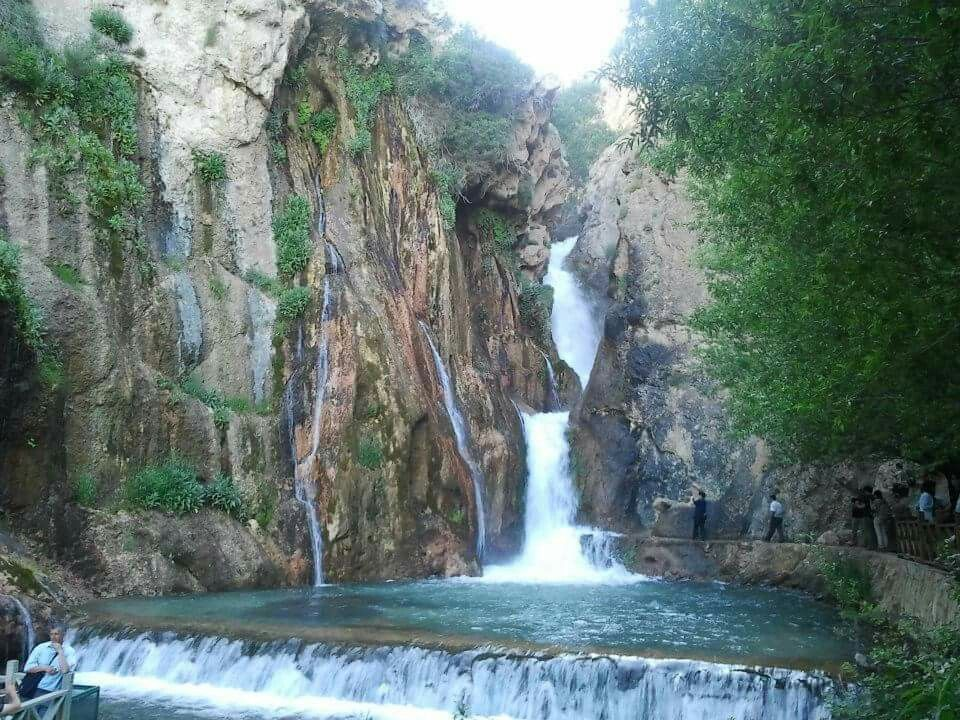
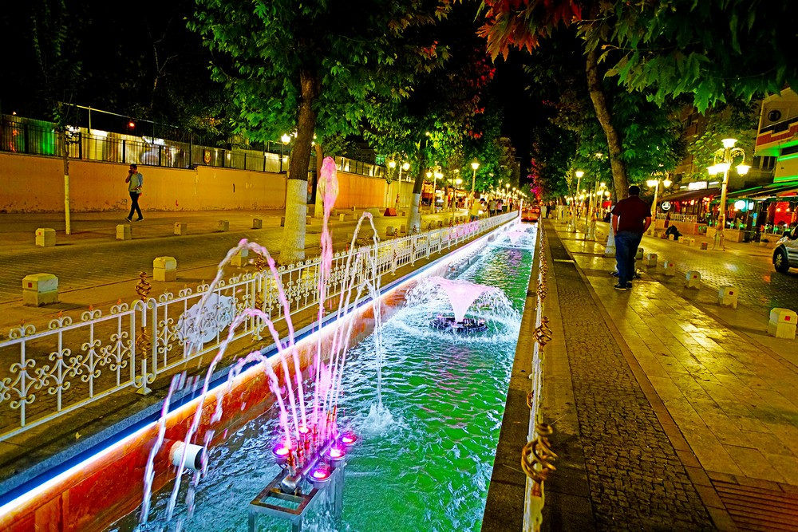
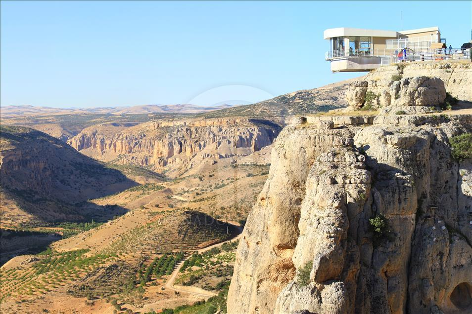
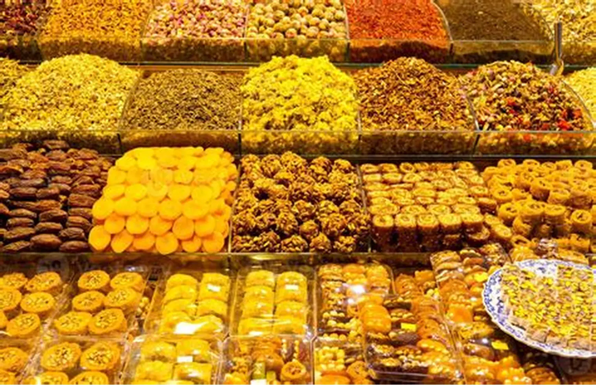

DOĞU'NUN YILDIZI: MALATYA
Gezilecek En Güzel Yerler ve Kültürel Miras

Arslantepe Höyüğü
Dünya Mirası Listesi'nin Göz Bebeği

Günpınar Şelalesi
Doğanın Kalbinde Bir Huzur Köşesi

Kanalboyu
Malatya'nın En Sosyal ve Meşhur Caddesi

Levent Vadisi
65 Milyon Yıllık Devasa Kanyon

Malatya Kayısısı
Avrupa Birliği Tescilli Tek Türk Kayısısı
Medeniyetin Şekillendiği Şehir: Malatya
Tarihsel Derinlik
Malatya, insanlık tarihinin en eski yerleşim merkezlerinden biri olma özelliğini taşır.
Ekonomik Güç ve Kayısı
Dünya kuru kayısı üretiminin yaklaşık %80'ini tek başına karşılayan Malatya, "Kayısı Başkenti"dir.
Gastronomi
Analı-kızlı, içli köfte ve kâğıt kebabı ile Türkiye'nin en zengin mutfaklarından birine sahiptir. 70'den fazla çeşit bulgur köftesiyle meşhurdur.
Eğitim ve Sağlık
İnönü Üniversitesi ve Turgut Özal Tıp Merkezi sayesinde bölgenin hem sağlık hem de bilim merkezidir. Karaciğer naklinde dünya markasıdır.
Coğrafya
Batıda Sivas ve Maraş, doğuda Elazığ ile komşudur. Fırat Nehri'nin bereketli toprakları üzerine kurulmuş, Doğu Anadolu'nun en gelişmiş illerindendir.
* Malatya, her yıl düzenlenen Kayısı Festivali ve Uluslararası Film Festivali ile kültürel canlılığını korumaktadır.